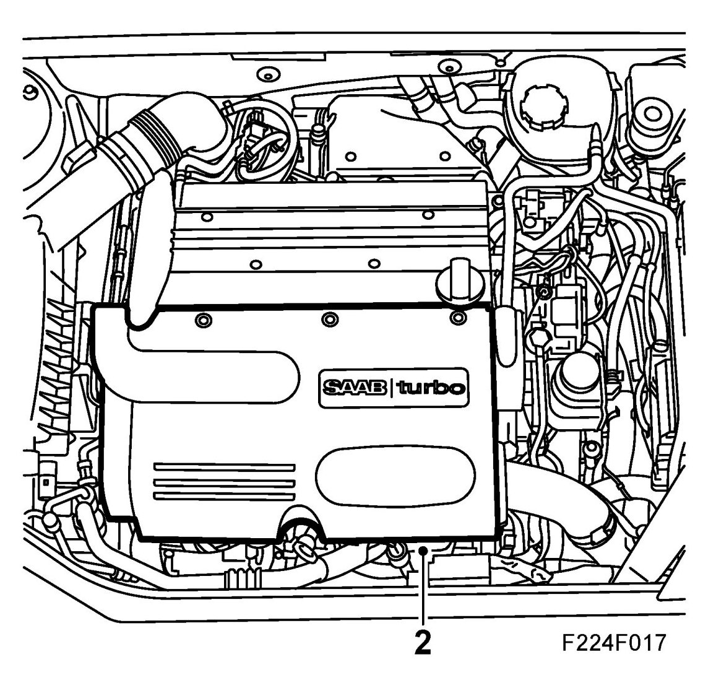
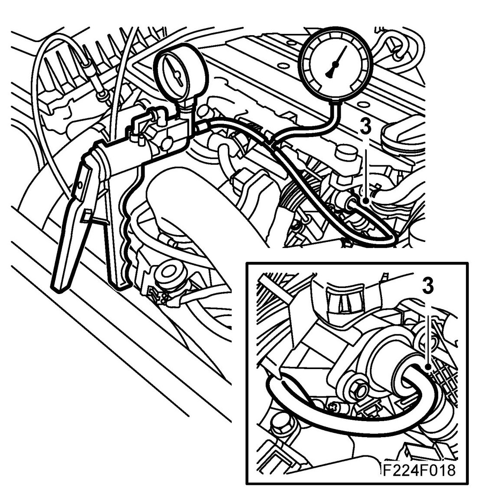
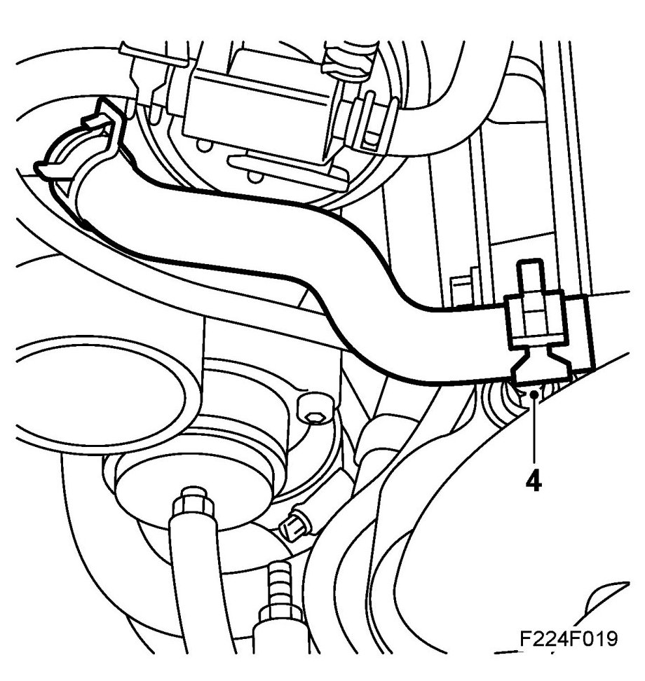
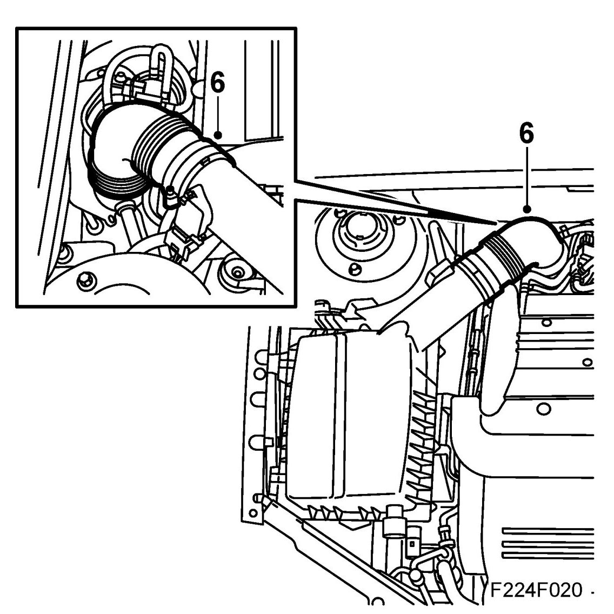
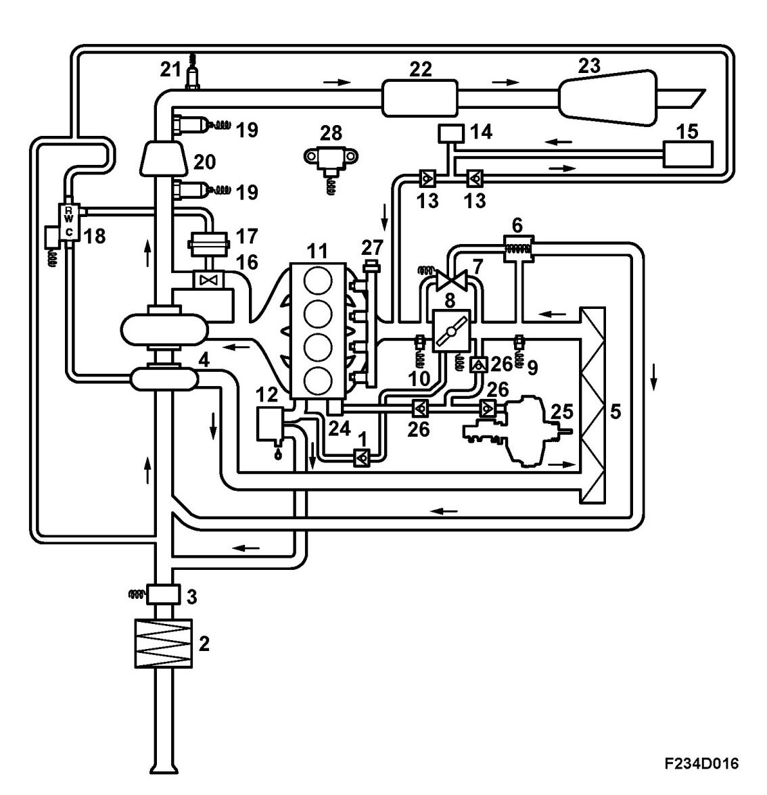
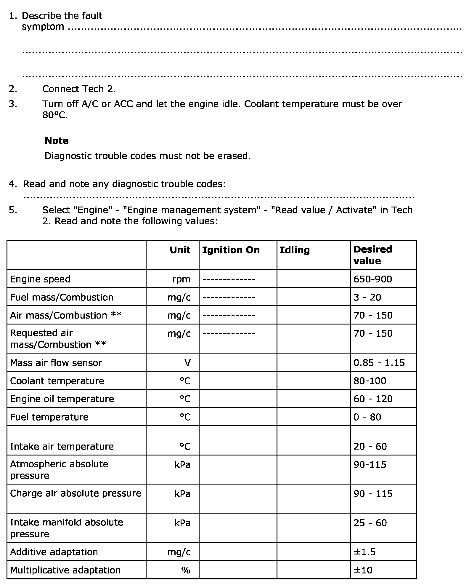

Poor Driveability, Impaired Performance, Uneven Running
Poor Driveability, Impaired Performance, Uneven Running
Fault symptom
- Poor driveability
- Impaired performance
- Engine has uneven or low idling speed
- Surge or hesitation upon acceleration
Criteria
The car may have certain fault symptoms without a diagnostic trouble code being generated. This can be due to an air leak in the induction system.
If diagnostic trouble codes arise then the respective fault diagnosis must be carried out first. The following method is a supplement if the fault cannot be found using normal fault diagnosis procedures. The method includes checking for leakage in the induction system and fuel adaptation procedures in the engine management system.
Procedure
1. Copy the Checklist in this document in 2 copies. Enter the values from Tech 2 into one of the copies before any action is taken.
2. Remove the upper engine cover.

3. Connect 83 93 514 Boost pressure gauge via a T-pipe to the hose between the fuel pressure regulator and the intake manifold.

4. Detach the clamp for the crankcase ventilation hose at the camshaft cover using 30 07 739 Hose pinch-off pliers and block it using a M12 bolt or other suitable plug.
IMPORTANT: Do not plug the hole in the camshaft cover. The air that leaks past the pistons down in the crankshaft during test pressurizing must be evacuated through this hole.

5. Replace the existing plug in kit 83 95 659 Plug kit with plug 83 94 595. It may be necessary to use a new hose clamp to keep the hose on plug 83 94 595.
6. Detach the intake hose at the air filter holder. Fit plug 83 94 595 in the hose and then connect the pressure regulator to an external compressed air outlet.
IMPORTANT: Close the pressure regulator before connecting it to the air pressure outlet.

7. Pressurize the induction system by carefully turning the pressure regulator until a maximum 0.6 bar overpressure has been reached. Read the pressure on 83 93 514 Boost pressure gauge.
8. In this way the entire induction system is pressurized and leaks can be located by using leakage (detection) spray or soap solution which will bubble and foam around the leak. Inspect all components, hoses and connections as well as rectifying any audible or visible leaks.

8.1. Check valve, crankcase ventilation
8.2. Air filter
8.3. Mass air flow sensor (205)
8.4. Turbo
8.5. Charge air cooler
8.6. By-pass valve
8.7. Solenoid valve, turbo by-pass (605)
8.8. Throttle body actuator unit (604)
8.9. Intake air temperature sensor (407)
8.10. Manifold absolute pressure sensor (431)
8.11. Engine
8.12. Crankcase ventilation, oil trap
8.13. Check valves
8.14. EVAP canister purge valve (321)
8.15. Evaporative emission canister
8.16. Wastegate valve
8.17. Charge air regulator
8.18. Boost pressure control valve (179a)
8.19. Oxygen sensor (592, 593)
8.20. Catalytic converter
8.21. Exhaust temperature sensor (602)
8.22. Front silencer
8.23. Rear silencer
8.24. Vacuum pump
8.25. Brake servo
8.26. Check valve
8.27. Fuel pressure regulator
8.28. Atmospheric pressure sensor (539)
IMPORTANT: Only large leaks affect the function of the engine management system. When leakage spray or soap water is used, even small leaks will be detected. Several small leaks can be grouped together and viewed as one large leak.
Individual tiny leaks need not be remedied.
9. Remove plug 83 94 595 from the intake hose. Connect the hose to the air filter holder.
10. Remove the plug from the crankcase ventilation hose. Connect the hose to the camshaft cover.
11. Remove the boost pressure gauge. Connect the hose to the fuel pressure regulator.
12. Fit the upper engine cover.
13. Read out the control module software version (Software Module Identifier #1) in Tech 2. If there is a later software version in TIS2000 then this must be programmed into the control module.
IMPORTANT: Unless new software is loaded into the engine control module the fuel adaptors are to be set to zero before point 12 is carried out.
14. Perform the fuel adaptation and check it using Tech 2 as follows:
14.1. Turn off the A/C or ACC
14.2. The engine temperature must exceed 80 °C and the engine must have been running for at least 3.5 min for the fuel adaptation to be possible.
14.3. Drive on a flat road at between 1500 - 2750 rpm in 5th or 4th gear, attempting to keep the accelerator pedal completely still for approx. 3 minutes.
14.4. Stop the car and allow the engine to run at idling speed for approx. 3 minutes.
14.5. Read "Multiplicative adaptation" on Tech 2.
14.6. Read "Additive adaptation" on Tech 2. If the adaptations did not change from 0, switch off and restart the engine, and repeat steps 14.3 - 14.6.
15. Fill out the second copy of the checklist.
16. Disconnect Tech 2.
17. If the problems have not been solved, contact the importer's technical support. Have the checklists that were filled out ready.
Checklist
